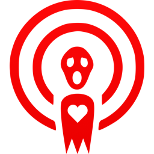
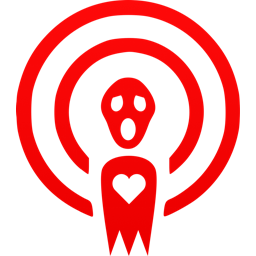
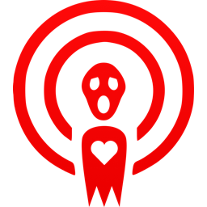
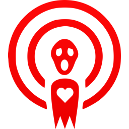

 

Welcome to Horro Makes Us Happy, a podcast where we'll try to answer the question "What is it about horror that makes us happy?"
Your hosts are Steve Becker and Chrios Whitman, and you can find out more about us on the About page.
At the top of our Guests page your'll find our three most recent episodes, and a list of people we'd love to interview. If we've already interviewed them the page will have a link to their interview. If you can put us in touch with any we have not interviewed yet, please do! Also, contact us if you can think of anyone we should add to the list!
If you like what you are hearing and want to suppor us you will find links to all kinds of intersting stuff on our Merch page; and our Contact page has links to a number of social media pages. Contact us in whatever way you would like and let us know how we are doing!